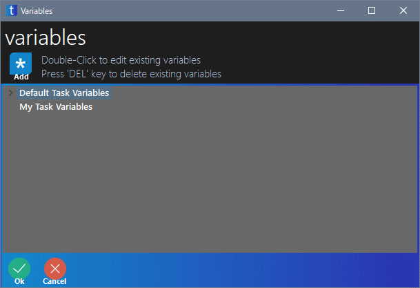
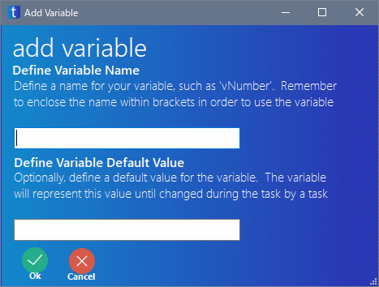
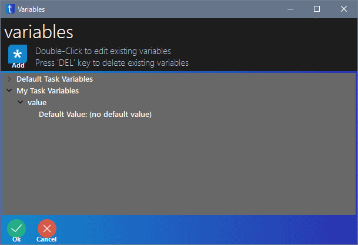

無料で使える RPA の taskt の使い方を紹介しています
Variable Manager では、スクリプト中で使用できる変数を管理できます。
Variable Commands の New Variable という命令でも、変数の定義はできますが、Variable Manager で宣言しておくと、各種命令中で一覧から選ぶことができるので便利です。

| 種類 | 意味 |
|---|---|
| Default Task Variables | taskt が初めから利用できる変数です 現在のユーザー名やデスクトップの場所、ループの回数などの情報があります ここにある変数は、どのスクリプトファイルでも使用できます |
| My Task Variables | 自分で定義した変数の一覧です ここで定義した変数は、そのスクリプトファイル中でのみ使用できます |
Variable Manager での変数の追加方法です。
画面の左上の方にある Add をクリックします。
すると下のような画面が表示されます。
Define Variable Name の下の入力エリアに、変数名を入力します。
必要ならば、Define Variable Default Value の下の入力エリアに、変数の初期値を入力します。

試しに、変数名 value と入力し、OK をクリックします。
すると、定義した変数 value が My Task Variables に追加されます。
今回は初期値を指定してないので、Default Value: (no default value) と表示されています。「初期値は指定されていない」のような意味です。
